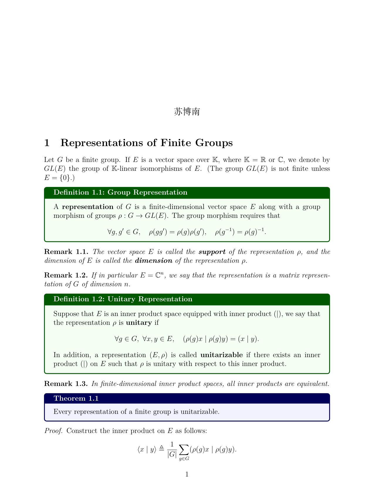
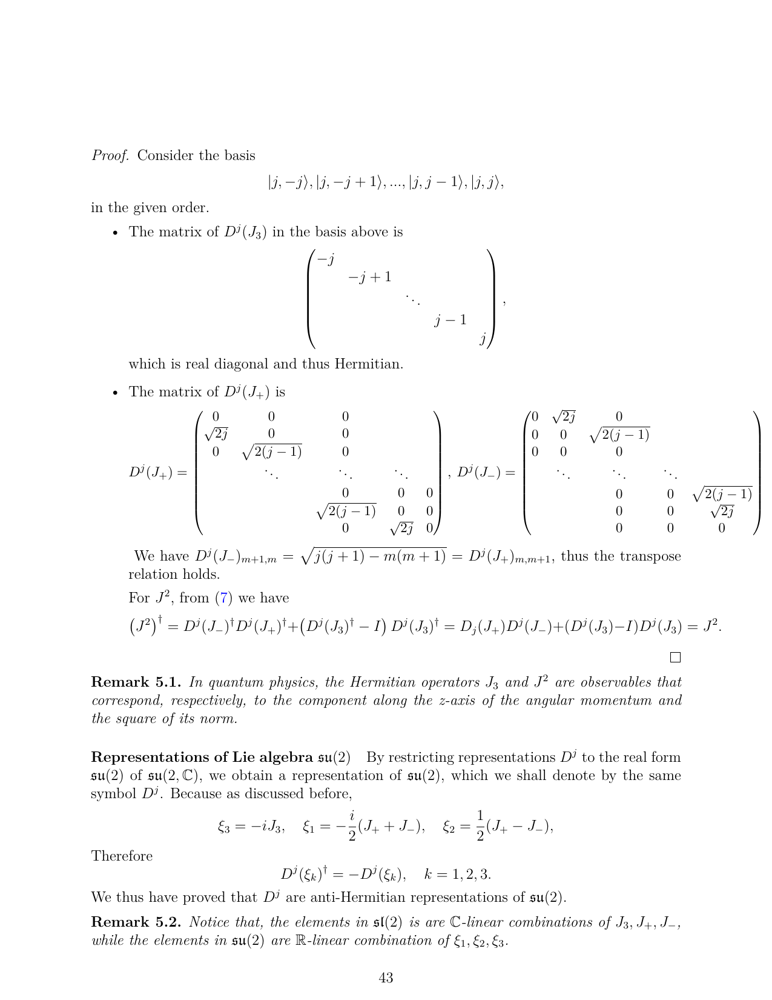

曼波，曼波，哦麻吉丽，曼波。
# 省流简要版（考前翻书）
# SO (3) 群的方位角、Euler 角群参数。SO (3) 群的类。
定义绕j,k 轴旋转的矩阵为：
Cj(θ)=⎝⎛cosθ0−sinθ010sinθ0cosθ⎠⎞,Ck(θ)=⎝⎛cosθsinθ0−sinθcosθ0001⎠⎞.
注意，这里绕j 轴考虑右手系，需要把−sinθ 放在左下角。
那么 SO (3) 中的群元素有两种参数形式：
- 方位角参数。SO (3) 群中元素描述了一个旋转，如下图所示
其中θ∈[0,π],φ∈[0,2π],ψ∈[0,π] 被称为方位角。这样一个旋转的矩阵形式为
Ck(φ)Cj(θ)Ck(ψ)Cj(θ)−1Ck(φ)−1.
这样 5 个矩阵乘起来表达了所有 SO (3) 群中的元素，但表达不唯一。譬如ψ=π,φ=0 时，θ=0 和θ=π 的旋转是相同的。
- Euler 角群参数。SO (3) 群元素可以用三个角度α∈[0,2π),β∈[0,π],γ∈[0,2π) 表达为：
Ck(α)Cj(β)Ck(γ).
这样表达也不唯一。譬如β=π 时，所有α−γ 一样的旋转都是相同的。
SO (3) 群中两个元素属于同一个类当且仅当它们对应的旋转角度相同。即共轭运算只改变旋转轴。所以可以用方位角ψ 描述类。
# SU (2) 群的 Cayley-Klein 参数，和 SO (3) 群同态关系以及群参数间的对应关系。
SU (2) 群的元素可以唯一地表示为
(a−b∗ba∗),a,b∈C,∣a∣2+∣b∣2=1.
其中a,b∈C 称为群 SU (2) 的 Cayley-Klein 参数。
考虑 Pauli 矩阵σx,σy,σz，我们构建如下对应关系：
三维实数向量(x,y,z)在R∈SO(3)下旋转(x′,y′,z′)=R(x,y,z)⟺⟺2维零迹Hermitian矩阵xσx+yσy+zσz在U∈SU(2)下作用U(xσx+yσy+zσz)U†=x′σx+y′σy+z′σz
注意，这里第一行是一一对应关系，因为所有二维零迹矩阵都可以唯一在 Pauli basis 下分解。
第二行不是一一对应关系，但是U(xσx+yσy+zσz)U† 仍然是一个二维零迹矩阵。
可以分析得，U,−U∈SU(2) 对应了同一个R∈SO(3)。
上述对应关系实际上是一个同态，即保持了乘法关系：
R1R2(x,y,z)=(x′,y′,z′)⟺U1U2(xσx+yσy+zσz)U2†U1†=x′σx+y′σy+z′σz.
所以说，我们认为 SU (2) 和 SO (3) 有一个 2:1 的同态关系。每一个 SO (3) 元素都对应于U,−U 两个 SU (2) 元素。
特别地，我们给出生成元之间的对应 SO (3)→ SU(2)：
Ck(α)⟶±(e−iα/200eiα/2),Cj(β)⟶±(cos(β/2)sin(β/2)−sin(β/2)cos(β/2)).
因此可以计算得 SO (3) 群 Euler 角参数和 SU (2) 群 Cayley-Klein 参数之间的对应关系为：
a=cos2βe−i(α+γ)/2,b=−sin2βe−i(α−γ)/2.
# 更详细的 notes



